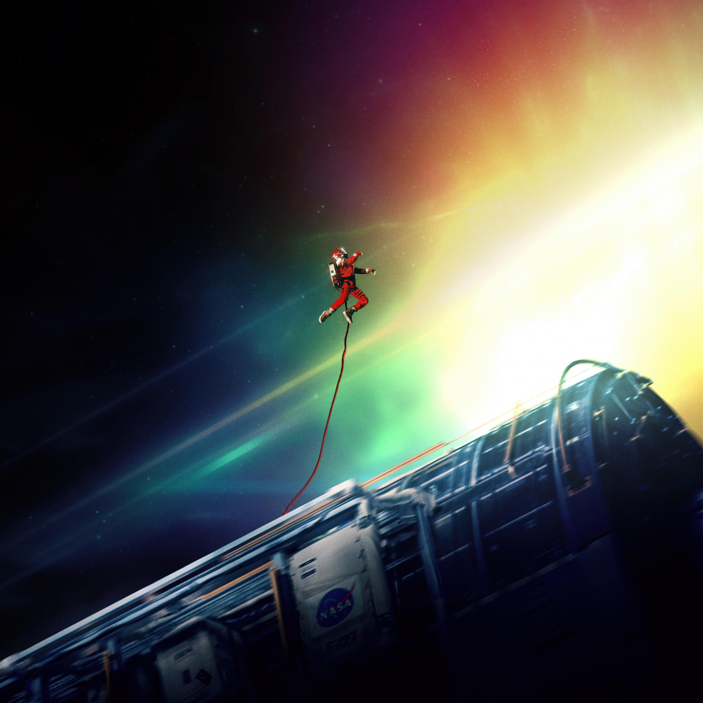
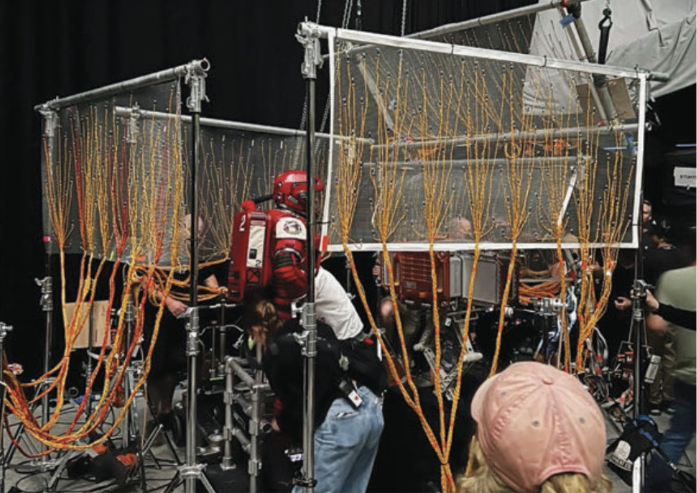
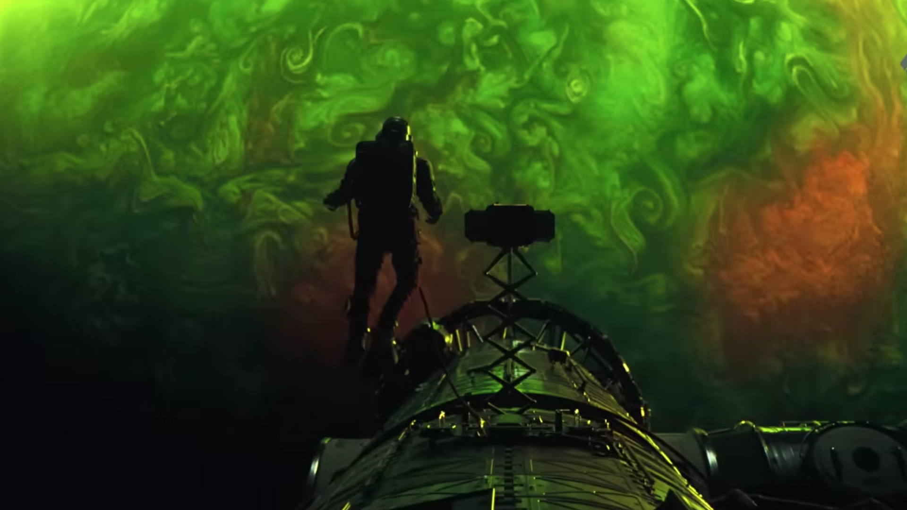

Project Hail Mary
The film adaptation of Project Hail Mary was developed as a collaboration between directors Phil Lord and Christopher Miller, screenwriter Drew Goddard, and author Andy Weir. Ryan Gosling starred as Ryland Grace and also worked as a producer, helping shape the balance between scientific realism and emotional storytelling. The filmmakers built detailed spacecraft interiors and laboratory sets instead of relying completely on green screens, giving actors realistic environments to perform in. Visual effects teams later expanded those sets digitally to create the enormous scale of deep space travel while still maintaining the grounded feeling that made the novel popular with readers.
One of the most visually challenging parts of the movie was the Petrova Line sequence, where the glowing trail of astrophage stretching across space is first revealed. To create the scene, the production team used LED volume stages, moving light rigs, and particle simulations to make the strange cosmic phenomenon appear believable. Instead of adding every effect digitally afterward, the crew projected lighting effects directly onto the spacecraft sets and actors so the reflections and shadows would look natural on camera. This combination of practical effects and CGI helped the scene feel more realistic and immersive for viewers.

The zero-gravity scenes surrounding the Petrova Line were also filmed using practical techniques whenever possible. Rotating ship sections, suspended rigs, and motion-controlled cameras allowed Ryan Gosling and the rest of the cast to physically interact with the environment rather than acting entirely against green screens. The cinematography team matched the practical lighting inside the ship to the glow of the Petrova Line so the actors and sets felt connected to the phenomenon outside the spacecraft. These filmmaking choices gave the scenes a more authentic appearance and helped audiences feel the isolation and wonder of deep space exploration.
Audience reception to Project Hail Mary was largely positive, especially among science-fiction fans and readers of the original novel. Many viewers praised the movie for staying faithful to Andy Weir’s scientific ideas while still delivering emotional moments and suspense. Critics highlighted Ryan Gosling’s performance and the relationship between Grace and Rocky as some of the film’s strongest elements. Reviews also noted that the practical effects made the movie feel more believable and emotionally engaging than many modern science-fiction films that depend heavily on digital environments. The realistic visuals helped audiences connect more strongly with the story’s themes of survival, cooperation, and discovery.

The movie also created a noticeable social and cultural impact beyond theaters. NASA scientists and astronauts publicly praised Project Hail Mary for encouraging interest in astronomy, engineering, and space exploration among younger audiences. Discussions about the film appeared in educational programs and online science communities, where viewers debated the realistic scientific concepts presented in the story. The film’s popularity even led to special screenings and viewings connected to astronauts aboard space missions, symbolizing how science fiction can inspire real-world curiosity about humanity’s future in space. By combining entertainment with believable science, Project Hail Mary became more than just a movie and helped spark broader public excitement about exploration and scientific innovation.